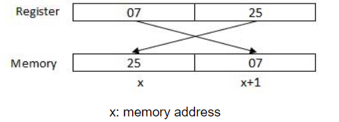

The process through which the processor controls the execution of instructions is referred as the fetch-decode-execute cycle or the execution cycle. It consists of three continuous steps
The processor may access one or more bytes of memory at a time. Let us consider a hexadecimal number 0725H. This number will require two bytes of memory. The high-order byte or most significant byte is 07 and the low-order byte is 25. The processor stores data in reverse-byte sequence, i.e., a low-order byte is stored in a low memory address and a high-order byte in high memory address. So, if the processor brings the value 0725H from register to memory, it will transfer 25 first to the lower memory address and 07 to the next memory address.
